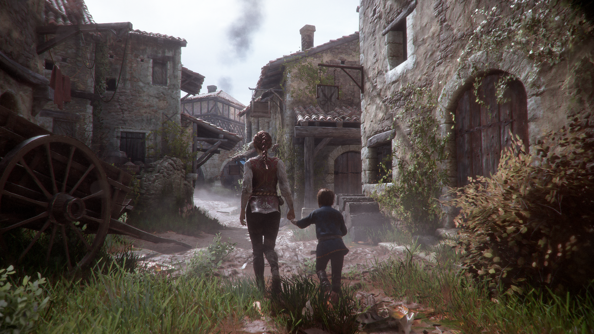

Hallo Gamer!
Wir freuen uns, Sie hier auf unserer Website begrüßen zu dürfen!
2022 hat uns jede Menge toller Spiele beschert. Was waren die größten Kracher und Überraschungshits? Wir haben euch die 5 Top Games 2022 in eine Liste gepackt.
Top Games 2022: Die 5 spannendsten Spiele

1. Elden Ring (25. Februar 2022/PlayStation 5/4, Xbox Series X/S, Xbox One, PC)
Souls 4. Nein, so nennen wir es nicht. Uns fällt bestimmt ein anderer Name ein. FromSoftware rückt spielerisch nicht weit von ihrer so erfolgreichen Dark-Souls-Formel ab. Gemeinsam mit Game of Thrones Autor George R.R. Martin haben die Japaner für Elden Ring eine faszinierende neue Welt geschaffen. Genauer das Zwischenland. Und dieses können wir zu Fuß oder zu Pferd, alleine oder im Ko-op, erkunden. Epische Bosskämpfe, großartiges Gameplay, unendliche Waffenvielfalt und eine fragmentarisch erzählte Story erwarten uns. Ein Dark Souls in einer Open-World – das ist genauso gut wie es sich anhört. Freilich kann es Einsteiger vor so manche Probleme stellen. Deshalb haben wir hier die 10 wichtigsten Tipps in diesen Survival-Guide gegossen. Hier ist Elden Ring auf Amazon erhältlich*. Optional auch zum Nachschauen in diesem Video:

2. God of War Ragnarök (9. November 2022/PlayStation 5, PlayStation 4)
Ragnarök, das Ende aller Tage. Endlich ist es da. Nicht Ragnarök, sondern das neue God of War. In der Fortsetzung eines unserer Lieblingsspiele von 2018 (hier unser Testurteil) kämpft Kratos an der Seite seines jugendlichen Sohns Atreus wieder gegen halb Valhalla, Asgard und alles dazwischen. In unserem ultimativen Buyers Guide verraten wir euch ob sich der Kauf lohnt, welche Vorteile die PS5-Version hat und wie brutal es wirklich zur Sache geht. Hier ist das neue God of War auf Amazon bestellbar*.

3. Horizon Forbidden West (18. Februar 2022/PlayStation 5, PlayStation 4)
Fortsetzungen wohin das Auge blickt. Aber nach dem Erfolg von Horizon Zero Dawn war es nur eine Frage der Zeit, bis Guerilla Games Aloy auf die nächste Mission schickt. Verbesserter Nahkampf, eine größere Karte, bessere Klettermechaniken und ein ganz neues Element. In Horizon Forbidden West tauchen wir mit Aloy ab und erkunden sogar die Unterwasserwelt. Während das Spiel auch für PS4 erscheint, lockt die PS5-Version mit verbesserter Beleuchtung, haptischem Controller-Feedback und einem Performance-Modus mit 60 Frames. Lies hier in unserem Test, wie gut die Neuerungen wirklich sind. Erhältlich ist das Spiel hier auf Amazon*.

4. A Plague Tale: Requiem (18. Oktober 2022/PlayStation 5, Xbox Series X/S, Switch, PC)
Amicia und ihr kleiner Bruder Hugo fliehen aus ihrer zerstörten Heimat, weit in den Süden in neue Gebiete und pulsierende Städte. Doch Hugos Fluch zwingt die Geschwister abermals zur Flucht: eine prophezeite Insel verspricht Erlösung. Höchst empfehlenswert, so lautete unser Fazit zu Plague Tale: Innocence. Der Nachfolger dürfte in die gleiche Kerbe schlagen. Details kannst du hier bereits in unserem großen Preview-Test zu A Plague Tale: Requiem lesen. Zu kaufen gibt es Plague Tale 2 auf Amazon*.

5. Gran Turismo 7 (4. März 2022/PlayStation 5/4)
sind für ihre bombastische Grafik bekannt, Gran Turismo besonders. Über 420 Autos auf über 90 Strecken lassen Kinnläden rund um die Welt fallen. Zum 25-jährigen Jubiläum sieht der Racer besser aus denn je. Auf der Playstation 5 glänzen die Felgen um die Wette und dank dem DualSense-Controller spürt man sogar die Unebenheiten der Straße und die Vibration des ABS. Auch auf der PS4 verfügbar ist der wieder eingeführte GT Simulation Mode, in dem man sich durch die Solo-Kampagne kauft, fährt, tuned und verkauft. Sucht ihr stattdessen auch mal den schnellen Spielspaß, dann werft unbedingt einen Blick auf unseren Guide mit den 24 besten Arcade-Rennspielen. Gran Turismo 7 kannst du unter anderem hier auf Amazon kaufen.*